Le personnage de Batman est un super héros de l’univers de DC Comics. Il a été créé par le
dessinateur Bob Kane et le scénariste Bill Finger et apparaît pour la première fois dans le
comic book Detective Comics en 1939. Batman se différencie de Superman, alors héros
majeur de DC, car il n’a aucun pouvoir. Il sera porté au cinema pour la première fois en 1943
par Lewis Wilson et bénéficiera de nombreux reboot, donnant l’occasion à de multiples
acteurs d’interpréter l’homme chauve-souris. Voici les trois derniers :
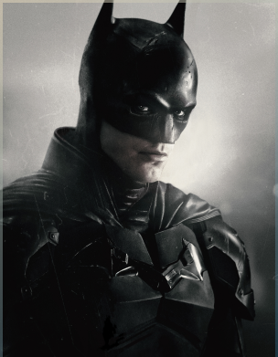
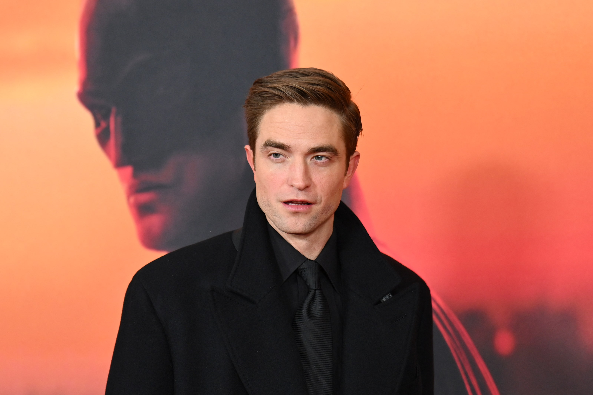
Robert Pattinson 2022
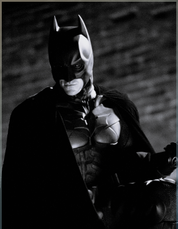
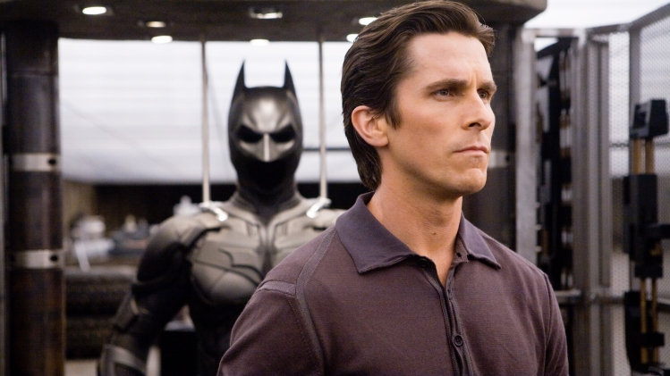
Christian Bale 2006 - 2008 - 2012
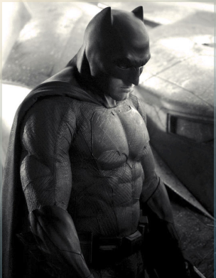
Ben Affleck 2016 - 2017/2020 - 2023
NÉMÉSIS
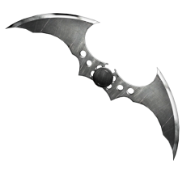
Batman souhaite éradiquer la criminalité de Gotham. C’est pourquoi, il affrontera la plupart
du temps, des vilains sans capacités surnaturelles mais particulièrement violents ou
psychopathes. Avec son introduction dans la Justice League il aura l’occasion de se mesurer à
des antagonistes qui défient l’imagination et les lois de la physique. Parmi les derniers
ennemis emblématiques que nous avons pu voir au cinéma, on retrouve :
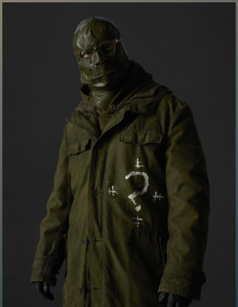
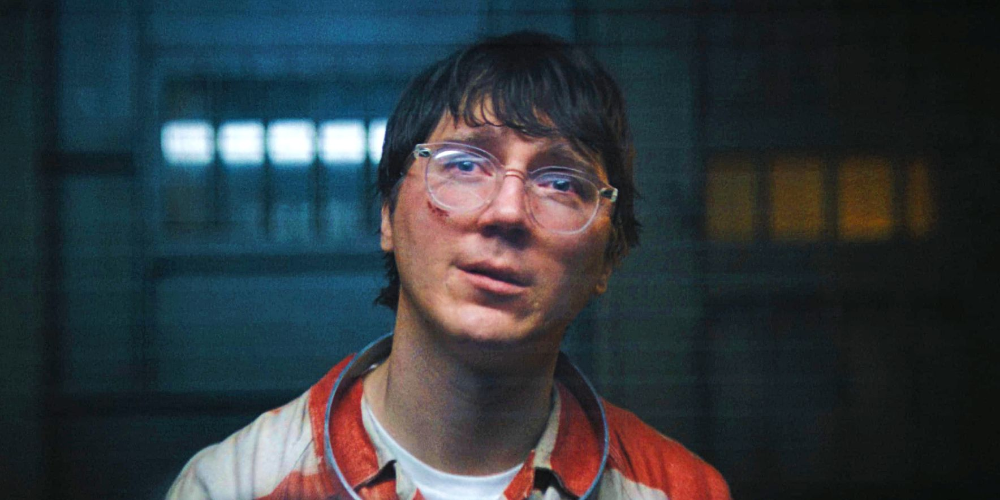
The Riddler - Paul Dano 2022
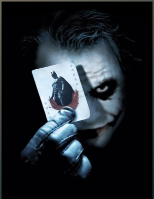
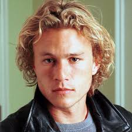
Le Joker - Heath Ledger 2008
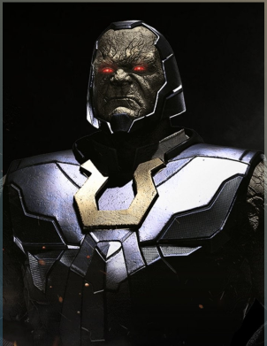
Darkseid - Ray Porter 2022
ALLIES
Alfred est le majordome des Wayne. A leur mort il s’occupe de l’éducation du jeune Bruce
avant de l’assister dans son rôle du Batman. Ce dernier rencontrera Catwoman dès le
premier numéro des aventures de l’homme chauve-souris en 1940. Tantôt ennemie tantôt
alliée la jeune femme fatale fera tourner la tête de Batman à maintes reprises. Du côté de la
police, Bruce pourra compter sur l’aide infaillible de James Gordon, “Jim”, qui désire lui aussi
nettoyer sa ville de la criminalité qui y règne.
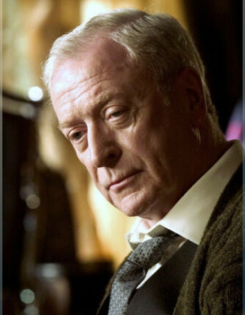
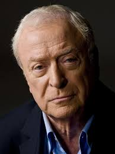
Alfred - Michael Cain 2006 - 2008 - 2012
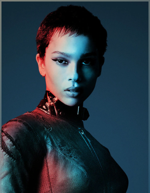
Catwoman - Zoé Kravitz 2008
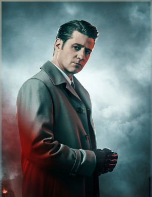
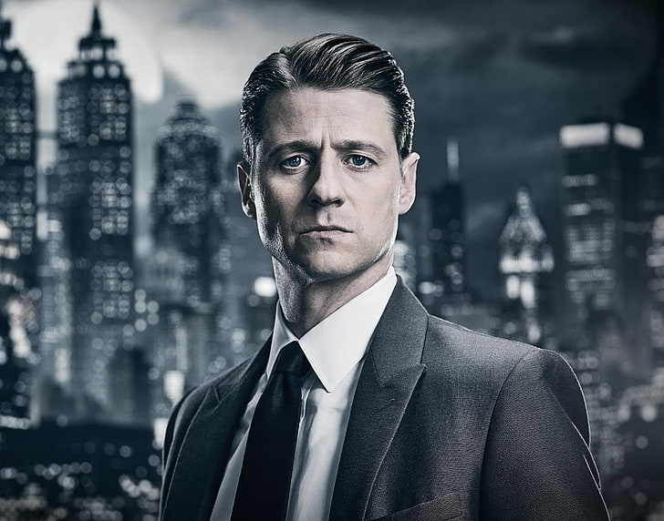
James Gordon 2014-2019
JUSTICE LEAGUE
Lorsque la Terre est menacée les plus grands super-héros s’allient pour la protéger. Ils
doivent cependant apprendre à se faire confiance mutuellement et à faire équipe ce qui ne
sera pas chose aisée. Ensemble ils forment la Justice League, les plus grands super-héros de
la Terre, ceux vers qui le monde entier se tourne lorsque les menaces extraterrestres ou
surnaturelles menacent son existence.
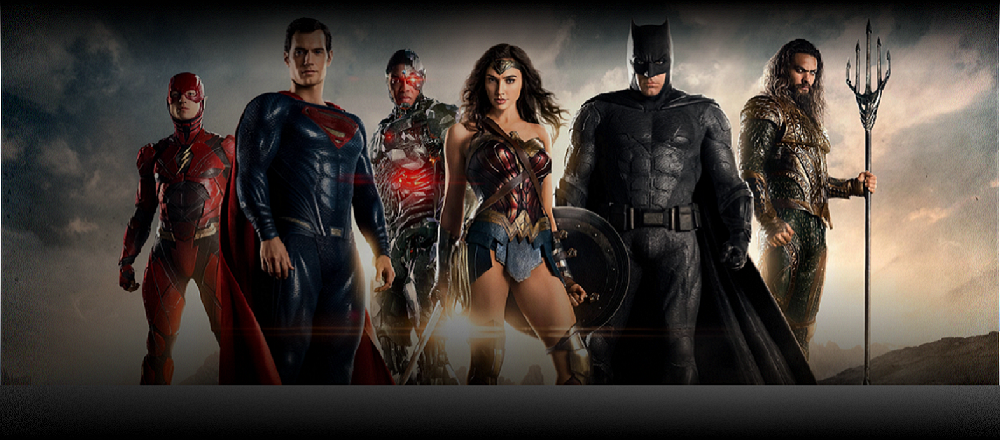
MULTIMÉDIA
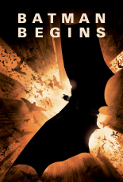
ACTION, ADVENTURE
Batman Begins
IDMB:8.2
Le jeune Bruce Wayne assiste impuissant au meurtre de ses parents. Profondément
traumatisé, il grandit obnubilé par un désir de vengeance. La Ligue des ombres, une secte de
guerriers ninja dirigée par Ra's al Ghul, se chargera de son entraînement. De retour chez lui à
Gotham, avec l'aide de son majordome Alfred Pennyworth, Bruce Wayne se lance alors dans
la lutte contre le crime sous le nom de Batman.
MESSAGE RECU !
La seule façon de vivre en ce bas monde, c'est en dehors des règles.